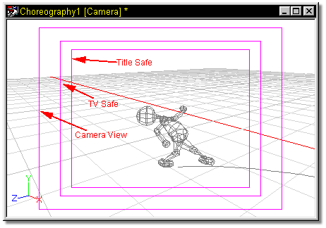

Some of your ambitious animation’s may show up on television. Unfortunately,
television screens cut off large portions of the original picture all around
the perimeter. When you are designing your animation’s for television, keep the
"TV Safe" region turned on while designing the choreography. TV Safe is a
rectangular box drawn from the camera's point of view that shows what will
ultimately be visible on a home television.
Some of your ambitious animation’s may show up on television. Unfortunately,
television screens cut off large portions of the original picture all around
the perimeter. When you are designing your animation’s for television, keep the
"TV Safe" region turned on while designing the choreography. TV Safe is a
rectangular box drawn from the camera's point of view that shows what will
ultimately be visible on a home television.
"Title Safe" is a similarly drawn rectangle inside the TV Safe region to indicate the minimum visibility region guaranteed on a television. As the two names indicate, it is a good idea to keep your action inside the "TV Safe", and the titles inside "Title Safe". For videogame use, movies, or stills, TV and Title Safe are not important.

Related Topics:
Camera Visible
Cone Visible
Display Background Color
Background Color
Focal Length
Focal Distance
Aperture
Fog Distance
Global Amibance
Camera Translate
Camera Scale
Camera Rotate
Front Projection Maps